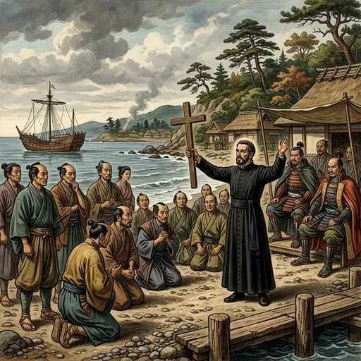
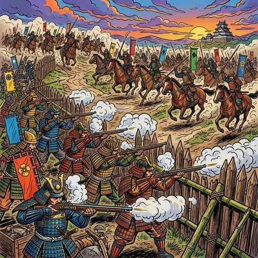

15. ヨーロッパ人との出会いと織豊政権
16世紀の中頃、日本に大きな変化をもたらす出来事が起こりました。ヨーロッパから未知の技術や思想が伝来し、それを利用した強力な戦国大名たちが天下統一に向けて動き出したのです。今回は、織田信長・豊臣秀吉がどのようにして戦乱の世をまとめ上げ、新たな近世社会を築いたのかを詳しく解説します！
1. ヨーロッパ人の来航と「南蛮貿易」
15・16世紀、ヨーロッパでは羅針盤などの技術革新によって世界中へ航海する「大航海時代」を迎えていました。アジアへ進出したヨーロッパ人たちが、ついに日本へとやって来ます。
① 鉄砲の伝来（1543年）
1543年、種子島（たねがしま、鹿児島県）にポルトガル人が乗った船が漂着し、日本に鉄砲（火縄銃）が伝わりました。鉄砲はすぐさま全国の戦国大名に広まり、従来の騎馬や弓矢による戦い方を「足軽の集団戦法」へと根本から変えることになりました。
② キリスト教の伝来（1549年）
1549年、イエズス会の宣教師であるスペイン人のフランシスコ・ザビエルが鹿児島に上陸し、日本に初めてキリスト教を伝えました。ザビエルやその後の宣教師たちは、貧しい人を救う医療活動などを行いながら、近畿や九州地方を中心に信者を増やしていきました。

図1：キリスト教を日本に伝えるために来日した宣教師「フランシスコ・ザビエル」のイメージ
③ 南蛮貿易（なんばんぼうえき）
当時、日本人はポルトガルやスペインの人々を「南蛮人」と呼び、彼らとの間で行われた取引を南蛮貿易（なんばんぼうえき）と呼びます。日本は世界有数の産出量を誇るようになった銀を輸出し、南蛮人からは鉄砲、火薬、生糸、絹織物、ガラス製品、時計などを輸入しました。貿易の利益を得るためにキリスト教の信者となる戦国大名も現れ、彼らをキリシタン大名と呼びます。
2. 織田信長の統一事業
尾張（愛知県）から登場した織田信長（おだのぶなが）は、いち早く鉄砲の威力に着目し、圧倒的な武力と先進的な経済政策で天下統一（天下布武）へ突き進みました。
① 長篠の戦い（1575年）と本能寺の変
1575年、信長は徳川家康と同盟を結び、三河（愛知県）の長篠で強力な武田勝頼の騎馬軍団と激突しました。これが長篠 of 戦い（ながしののたたかい）です。信長は3000丁とも言われる大量の鉄砲を用意し、木柵の後ろから足軽たちに交互に撃たせる戦法（三段撃ち）により、無敵と謳われた武田の騎馬軍を壊滅させました。
信長はさらに琵琶湖のほとりに安土城を建てて天下統一の拠点としましたが、あと一歩というところで家臣の明智光秀に裏切られ、1582年に京都の本能寺の変（ほんのうじのへん）で自害しました。

図2：木柵の後ろから一斉に鉄砲を撃ちかけ、武田の騎馬軍団を破った「長篠の戦い」のイメージ
② 信長の画期的な政策
信長は経済を活性化させ、軍事費を稼ぎ出すため、城下町での商業を自由にする楽市・楽座（らくいちらくざ）を行いました。これは、これまでの特権組織である「座」を廃止し、商売にかかる税金を免除することで、新しい商人たちが自由に商業を行えるようにした政策です。また、各地の通行税を取っていた関所を廃止し、物流をスムーズにしました。
3. 豊臣秀吉の天下統一と二大事業
信長の死後、明智光秀を討って後継者として実権を握ったのが豊臣秀吉（とよとみのひでよし）です。彼は1590年に北条氏を滅ぼし、全国の戦国大名を従えて天下統一を成し遂げました。
秀吉は全国を支配するために、日本の歴史上極めて重要な「二大改革」を行いました。
① 太閤検地（たいこうけんち）
ものさしと枡（ます）の大きさを全国で統一し、全国の田畑の面積や土地の良し悪し（収穫見込み）をくまなく調査しました。収穫量はすべて米の体積を示す「石高（こくだか）」で表されるようになり、一つの土地に対して実際に耕作している農民（本百姓）を１人だけ登録し、彼らに直接年貢を納めさせました。これにより、二重の支配や小作争いがなくなりました。
② 刀狩（かたながり）
1588年、農民や寺社から刀や脇差、弓、槍、鉄砲などの武器をすべて没収しました。これは農民が一揆や反乱を起こすのを防ぎ、農業に専念させるための政策でした。秀吉は没収した武器を「方広寺の大仏の釘にする」という名目で集めました。
③ 兵農分離（へいのうぶんり）
太閤検地と刀狩の二つの政策により、「武士は城下町に住んで政治と軍事を担当する」「農民は農村にとどまって農業と納税に専念する」という、武士と農民の身分の区別がはっきりと分けられました。これを兵農分離（へいのうぶんり）と呼び、江戸時代の強固な身分制度の基礎となりました。
4. 豪華できらびやかな「桃山文化」
信長・秀吉の時代（安土桃山時代）には、戦国を勝ち抜いた天下人や大名、豊かな大商人の富と圧倒的な権力を背景に、豪華できらびやかで活気に満ちた桃山文化（ももやまぶんか）が花開きました。
- 城郭（じょうかく）の建築：姫路城や大坂城など、高い天守閣を持つ豪華な城が築かれました。
- 障壁画（しょうへきが）：城の部屋のふすまや屏風に、金箔をふんだんに貼り、力強いタッチで唐獅子や花鳥を描く障壁画が流行しました。絵師の狩野永徳（かのうえいとく）（『唐獅子図屏風』など）が有名です。
- 茶の湯の大成：秀吉に仕えた千利休（せんのりきゅう）は、豪華さとは対照的な、無駄を省いた質素さの中に奥深い美を見出す「わび茶」の精神を極め、茶の湯を大成させました。
- 庶民の芸能：出雲の阿国（おくに）が京都で始めた「かぶき踊り」が流行し、のちの歌舞伎の源流となりました。また、現在の着物の原型となる衣服が広まりました。
🔥 この単元のテスト対策・暗記のコツ
-
★
鉄砲とキリスト教の年号の覚え方：
・鉄砲伝来（1543年）：「以後予算（1543）増える鉄砲伝来」
・キリスト教伝来（1549年）：「以後よく（1549）広まるキリスト教」 -
★
信長の経済政策「楽市・楽座」：
・記述対策：「座の特権を廃止し、関所をなくして、商人に自由な商業を認めることで城下町を活性化させた」と言えるようにしておきましょう。 -
★
秀吉の二大改革と「兵農分離」：
・太閤検地：全国の枡の基準を統一し、土地の収穫量を石高で表した。
・刀狩：農民から武器を没収した。目的は、「農民の一揆を防ぎ、農業に専念させるため」。
・結果として、武士と農民の区別が明確になり、兵農分離が進んだことが最重要ポイントです！